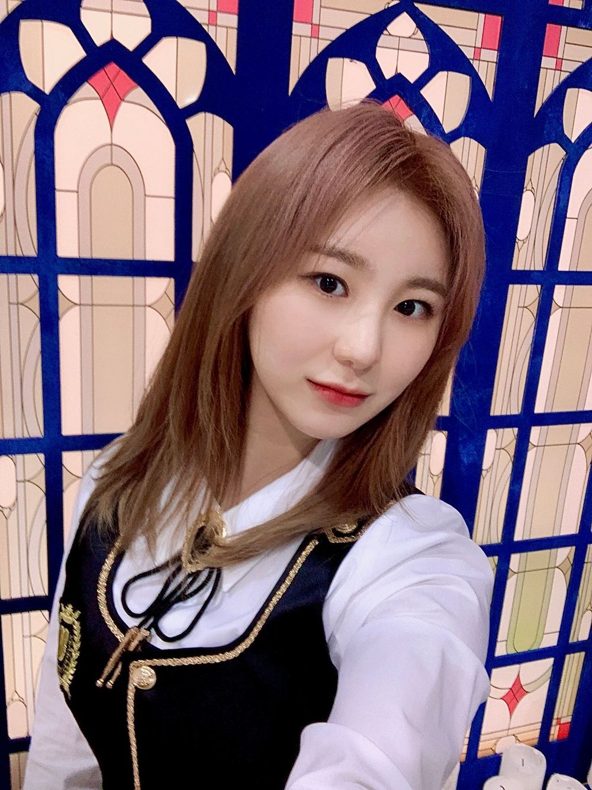

어제는 잠깐 동창이 저를 보러 와주었어요!
그래서 앨범에 메세지도 적어서
주고 쌓였던 많은 얘기도 도란도란 나눴답니다!! 그와중에
서로 밥 계산하려고 아주 난리도 아니였다니까요 휴
제가 이제 손이 빨라서 먼저 결제를 성공했는데요!!!
글쎄 이 친구가...!!! 본인 집으로 내려가기 전에
조수석 옆에 현금으로 밥값을 두고 갔다니까요???
어이가 없었음...
이미 이 친구는 떠난 뒤.
작년에 제가 밥을 사서 이번엔 꼭 본인이 사겠다고 다짐하고 올라왔대요ㅋㅋㅋㅋㅋㅋㅋ
근데
제 기억엔
작년에 걔가 저번에 너가 샀다며 계산했던 기억이 있는데
이 친구 담번에도 저번에 내가 선결제했다고 또
자기가 계산하는 거 아니겠죠?
못말려..
착하지만 조금 모자른 친구야
와줬으니 내가 내는게 당연한거야 임마
